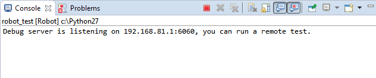

Remote debug
Remote debug allows to perform debug activities with RED using remote host to execute tests and get debug informaiton back to RED editor.
It is especially useful when Robot tests are executed on dedicated test line with hardware/software under test or in cloud environment where test editing and test execution is separated.
Remote debug is using custom RobotFramework listener (TestRunnerAgent.py python script) which sends running test status to local RED Editor. Apart from that, remote debug process does not differ from local debug - remember to set at least one breakpoint prior the debug run.

Setting up Remote Debug
First choose testcase which will be remotely debugged. If there is no debug configuration created for testcase, it's best to run local debug first even though it may fail. This will create debug configuration which will be used in later steps.
Getting TestRunnerAgent.py
- Open Debug Configurations by Run -> Debug Configurations ...

- Go to testcase debug configuration under Robot tree, open tab Remote and click Export Debug Script to get TestRunnerAgent.py

- Copy TestRunnerAgent.py file to remote host.
Configure IP/port to accept connection from TestRunnerAgent.py
Remote tab of Debug Configurations consists Local IP and Local port. This fields needs to be populated with local IP/port where RED is run.
Do not use localhost in IP field as it is not supported.
Running Remote Debug
After pressing Debug in Debug Configurations or starting Debug manually, following Console entry should be visible:

On remote host, testcase with custom listener (TestRunnerAgent.py) needs to be started.
Exact command depends on testing environment and testname, it can be derived from local debug run and from RobotFramework robot.run implementation (see https://robot-framework.readthedocs.org/en/2.9/_modules/robot/run.html).
Generally syntax with additional listener is following:
python -m robot.run --listener REMOTE_PATH\TestRunnerAgent.py:PORT:True:IP ADDITONAL_PARAMETERS
For instance: python -m robot.run --listener C:\RED\TestRunnerAgent.py:6060:True:192.168.81.1 -s robot_test.Keyword_driven
Possible issues
When having problem with Remote Debug, please double check following:
check if remote host can connect to local host (routing, firewalls)
check network settings in Debug Configurations (Port/IP) and in TestRunnerAgent command line parameters
check if you have the same test material locally and remotely (exact same testcases, test names)